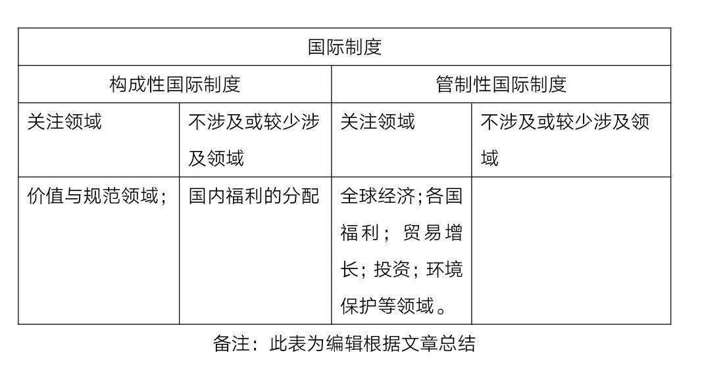
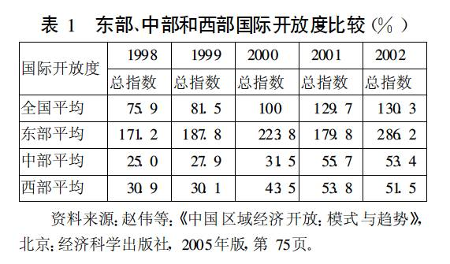

收录于合集

简
苏长和
复旦大学国际关系与公共事务学院外交学系 ，教授。研究方向为世界政治理论、中国政治与外交、国际组织。
★
内容提要： 地方国际化是改革开放30年来中国国际化的重要组成部分,其进程对帮助我们理解中国外交转型与变迁具有重要的意义。作者运用国际关系与国内政治理论,从地方政治经济与全球政治经济的互动出发,通过研究地方国际化的表现及其结果,揭示全球化背景下中国对外关系中的地方因素。作者分析了影响中国地方国际化的国际制度、国内政策和央地制度因素,认为地方国际化降低了中国与国际体系交易的成本,加强了中国与国际体系的合作关系。作者同时指出,由于特殊的财政制度,使得中国地方之间的经济保护与地方对外部世界的开放成为值得关注的两种并行现象,尤其是中央和地方之间的保护主义一定程度上增加了中国在外交上统筹国内国际两个大局的难度。
关键词： 地方国际化；地方全球联系；中国外交
★
前言
“并行的全球化与地方化(glocalization)”现象。 在全球化进程中,地方与外部世界的联系愈益密切,如果说所有的政治都是地方政治,那么在全球化的今天,所有的地方政治又是全球政治。要了解一国政治,不了解该国地方政治在其政治系统中的功能以及全球政治经济因素在其国内施加的影响，这显然是难以想象的。改革开放30年来,中国与世界的关系发生了历史性的变化,世界与中国皆经历着巨大的变革。有两个引人注目的现象使得本研究变得很重要:一个是1978年以来中国对国际体系的参与,国际体系中的规则与规范对中国产生规制作用;另一个是随着改革开放的深入,地方不同程度地卷入到国际化的进程中。我们把这两种共时共生的现象,也即全球化产生的地方效应以及地方的国际化趋向概括为“并行的全球化与地方化(glocalization)”现象。
本文试图对改革开放30年来中国地方国际化进程进行研究，揭示这一进程对我们理解中国外交转型与变迁的意义。文章希望把国内政治与国际关系整合起来, **从地方政治经济与全球政治经济的互动出发,通过研究地方国际化的表现及其结果,揭示全球化背景下中国对外关系中的地方因素。 **
一、地方国际化的背景：中国参与国际市场经济体系
1978年开始的中国改革开放,始终是在坚持国内- 国际统筹的大战略下进行的。为了满足国内政治经济从经典社会主义体制向市场社会主义体制转型以及现行国际体系规则和规范所要求的国内调整的需要， **中国对外开放战略的 重要形式就是全面参与国际体系,其内容表现为接受和参加国际体系中的制度(规则与规范)。**维持现行国际体系运转的国际制度具有刚性,中国不大可能以自己的主观意志、以改变国际制度满足自己国内状态为前提参与国际体系,因此, **在过去 30年的大部分时间里,以自由主义为基础的国际制度对中国产生了更强的市场调整效应,**也就是说,一旦中央政府打开开放的闸门,市场导向的国际制度在国内所产生的规定效应,有助于降低地方与国际体系的交易成本。
构成性国际制度与管制性国际制度。 当今在国际社会中发挥广泛作用的国际制度可以分为构成性国际制度与管制性国际制度两大类。

总体上讲,中国坚持国际条约的地位优越于国内法的原则,表明中国贯彻条约必须善意履行原则的坚定性。改革开放以来,中国在参考国际体系规则与规范所进行的法律移植过程,体现了国际制度对中国国内法治的影响，国际社会中通行的法治原则和合理性原则成为国内立法、市场规则确立甚至司法的重要参考依据。大致来说， 1978年以来的中国法律移植分为三种情况: （1）有关涉外法律方面借鉴国外法;（2）在国内事务的领域中借鉴国外法;（3）在全球化条件下制定国内法时参照国际标准。 上述三种情况反映中国在原则上并不排斥国际体系中现有的国际制度,且经验也表明中国在政策和法律制定过程中是参考和借鉴国际制度的。
构成性特别是管制性国际制度为全球贸易和投资的增长以及国家间相互依赖关系的管理提供了制度性保障。 对国际制度的参与同改革开放30年中国国际化程度的加深存在正相关的关系:一方面,因为既有的国际制度本身构成全球化的制度基础;另一方面,为适应全球化规则而做出的国内调整,减少了国内经济与全球经济衔接过程中可能存在的摩擦。历时15年(1986～2000年)的中国加入世界贸易组织(WTO)的漫长谈判,最为鲜明地体现了中国经济体制与代表市场与法治原则的WTO规则(管制性国际制度)磨合的艰苦性。 WTO对于加速中国的市场化与国际化进程至少产生了如下的影响:
第一, 为了适应WTO中的市场规则,中国在2001年前进行了大规模的法律、行政规章条例的立改废工作。
第二, 加速中国全面开放的步伐,改变过去出现的开放政策在地区上厚此薄彼、在企业上内外有别、在行业上避重就轻、在部门内行政管制过多的问题。在中国“入世”议定书所包括的承诺内容中,涉及行政审批、关税削减、投资限制、微观经济主体地位、国民待遇等与法治和市场经济相配套的大部分规则,承诺内容以及最终所要达到的目标均是市场导向而绝不是计划经济导向的。
第三, 世界贸易组织规则对中国的市场化和国际化进程具有一定的设定和锁定作用,世界贸易组织本身的诉讼与制裁机制以及中国“入世”议定书中有关市场开放时间表的硬约束,确保中国国际化的进程不至于产生逆转的可能。
二、地方国际化的背景：开放政策变迁
本文并不认为中国国际化的启动完全来自地方,尽管个别地方进行了先期国际化的试验是个确凿事实。在改革开放初期的高度中央集权体制中,没有中央层面的容许与鼓励,地方国际化进程的启动是难以想象的,因此, 地方政治和经济行为的自主性总是在中央-地方关系的背景下存在的。 当然,地方作为国际化的试验地,又使其国际化对其他地区产生巨大的扩散和溢出效应,中央政府能够顺应地方国际化的溢出趋势,推动其他地区的第二波国际化进程,这其中既有国际体系的因素，也有开放战略的均衡考虑。
就政策而言, 随着政府工作重心转向经济领域，从1979年开始,中央政府对地方政府和企业实行分权让利,分权的指导思想正如王绍光所指出的,是 从统制经济过渡到市场经济 的必由之路。 对企业的分权 促使财政收入进一步向企业分散, 对地方的分权 则促使地方政府在经济活动中拥有更多原来属于中央政府管理的财权和事权,这些财权和事权包括基本建设计划审批权、物价管理、外资审批、外贸及外汇管理、企业下放,而对于中央授予的少数地方政府、经济特区、中心城市,它们还享有一定的“经济特权”。地方的束缚一旦被松开(尤其是沿海地区),经济活力就会源源不断地释放出来,加上 现行官员升迁的考核 与地方经济增长存在最直接的关系,作为经济活动主体之一的地方政府具有强烈的动机,通过最易见成效的 贸易与投资(所谓的招商引资) 来拉动地方经济增长 ,国际化同样会成为地方政府的政策首选。
放权让利政策一开始的推广形式是有区别和非均衡的。这种谨慎而非激进的策略方式后来被许多人总结为中国经济改革与开放取得成功的关键因素之一。 到20世纪90年代,非均衡开放政策带来的不平衡发展开始受到越来越多的关注。 政策调整的压力来自两个方面:一是国际体系,二是国内。 实际上,国际贸易体系与中国国内经济体制在20世纪90年代经历着相互转型的过程,前者面临从GATT到WTO的转变,后者面临从计划经济体制向市场经济体制的转变，国际- 国内相互转型存在契合性。1987～1989年,GATT中国工作组认为中国外贸制度存在的五大问题中,首当其冲的是经济贸易税收法规在全国的实施存在地域差别,一些地区和城市执行中央的统一政策法规有偏差或擅自对外商减免税收,从而一方面致使一些外商抱怨在不同地区、城市和港口受到不同的外商投资待遇、不同的进出口许可程序、不同的税收待遇;另一方面有越来越多国内企业抱怨由于不平衡的开放政策,使外资企业在国内享受了超国民待遇,不利于内外企业的公平竞争。简单地说,GATT的主要缔约方要求中国承诺在全国关税区域范围内统一实施关税及贸易总协定的义务,而梯度开放政策所带来的国内市场不协调现状显然有违GATT的公平贸易精神,因此, 国际体系的压力推动中国调整国内不平衡的开放政策。
国内压力来自于改革开放以来中国国内日趋扩大的地区差距。 造成这种差距扩大的原因有经济因素,也有政治原因。就 政治原因 来说,中央政府的不均衡发展战略是重要因素之一。王绍光和胡鞍钢的研究指出,中央政府的不均衡发展战略体现在两个方面:一是将国家的投资重点从内陆地区转向沿海地区,二是给予沿海地区以优惠政策。从总的开放战略上讲,到20世纪90年代,中央政府也有必要调整不均衡的开放策略。因此,从中央的整体开放战略部署中,局部或者特殊地区的开放并非一成不变地只限定在局部地区。 到90年代后期,由于地区差距和国际制度的压力,使开放策略自然出现从局部开放扩大到全面开放的巨大转变。
总的来说,开放政策的调整既受到国际经济体系的压力,也出于遏制日趋扩大的地区差异的需要。在过去的30年中,不均衡的开放政策导致地方国际化程度的差异,这是由先期国际化与后期国际化的前后实践所决定的。实际上,国际化最初主要局限在沿海省份,随着均衡的开放政策的展开,内地国际化的进程才产生实质性的启动, 特别是进入21世纪的近十年来,内地国际化极大地扩大了内地沿边地区与周边国家的经贸合作, 像非常活跃的泛天山贸易区、中国西南省份与东盟国家间的大湄公河流域合作区以及东北三省参与的东北亚图们江开发计划等,均显示了内地国际化在过去十年的强劲发展。
三、地方国际化的背景：央地制度变迁
地方国际化的第三个重要背景是中央-地方关系的制度性安排在过去30年的调整对地方国际化所产生的激励意义。 中央- 地方关系方面的制度性安排特别是财政制度安排,因为给予地方政府以不同形式的激励而影响到地方政府的政治与经济行为。在中央政府打开开放的国门之后,针对地方的分权有助于发挥地方在经济上的积极性和自主性,从而加强地方与外部世界的相互依赖程度。 但是,分权或者放权存在底线,否则会威胁到中央政府的权威和宏观调控能力。 1978～2008年,中国经历了几次财政制度变迁,其中影响较大的是1994年实行的分税制。 总的来说,过去30年中央- 地方关系中的财政制度以不同方式激活了地方发展经济的动机,并使其作为重要经济活动主体之一参与国际经济体系。“分级包干”制度 的初衷是让地方(特别是沿海开放前沿地区)留有更多的财政收入投入到经济发展中,这符合后面所说的梯度开放与一部分地区先富起来的改革战略。而 分税制 的初衷则是加强中央财政的汲取能力,其短期后果是地方财政收入的减少。这项制度看似可以通过中央财政汲取能力的加强来提高中央政府的宏观调控能力。分税制实施后,中央财政收入也的确急剧增加了,但是,由于财政转移支付不健全,特别是地方财政性收入的减少,反而直接刺激了地方通过各种手段寻找财政预算外收入的动机,各种五花八门的政策继续盛行,价大利高且有利于地方税收的行业(如汽车、烟草、房地产等)得到地方政府的鼓励。地方经济割据并没有从根本上得到改善,中央政府的宏观调控能力也没有随着中央财政收入的增加而加强,至少目前看是如此。
开放政策为地方通过全球联系实现地方利益提供了重要的替代选择,这一点在封闭体系中是不可能的。 而在开放的大背景下,财政包干制与分税制以不同的激励方式刺激地方扩大其全球联系,在前种制度下,与外部世界的贸易和投资可以保证地方截留更多的财政收入;在后种制度下,地方在财政收入减少的情况下被迫更加依赖对外贸易和投资。
四、地方国际化的表现及一般结果
国际体系、开放政策取向以及中央-地方关系方面的制度性安排等因素推动了1978年以来中国地方的国际化趋势。 用 委托-代理理论 可以更为清楚地说明地方国际化的动力。
第一, 在全球-中央- 地方的三层关系中,中央政府是权威的垄断者、立法的制定者以及政策的解释者,中央政府可以借助政策或制度安排,激励地方的经济活力,进而从地方经济发展中获得最大化的税收,巩固自己的执政能力。
第二, 地方政府扮演代理者的角色,是经济活动的重要主体,来自中央的分权加上经济增长因素在官员升迁考核中的重要地位,地方政府拥有强烈的动机将经济发展作为工作的重中之重,尽管出于地方利益考虑,地方政府的政策与行为在有的情况下可能与中央的口径和步调不一致,甚至出现后面所说的“背叛”。
第三, 国际体系的和平与稳定为中国的改革开放创造了有利的外部条件。国际体系与国内政治互动的一般规律显示,国际体系动荡的可能性越大,国内行政权力就越可能趋向高度集中,反之,当国内领导集体对国际体系潜在稳定性的预期越强时,其就越可能采取向地方分权的政策。相应地,也越可能向上委托权力,采取多边决策的方式解决区域或者全球公共问题。另外,国际体系的稳定促进了对外贸易与自由投资,从而增加了政府(特别是转型国家)采取亲市场政策的可能。
因此,分权化的财政安排以及倾斜性的开放政策为地方提供了极大的税收激励,尤其是沿海省份,在开放进程中率先享受参与国际体系规则所带来的好处以及贸易与投资拉动所带来的经济增长。对整个中国以及中国的地方而言,30年的开放带来的一般化结果表现在国内经济自由的扩大以及市场化程度的提高上,当然,对于不同地方而言,市场化程度会表现出明显的差异。
由于开放政策的不均衡性,加上中国地方在经济禀赋上存在极大的差异性,中国各个地方的市场化和国际化程度也不同。赵伟等人根据商品、资金、人员、技术等有形物质与信息、文化、观念等无形要素在一个地区与另一个地区之间、该区域与国外的流动与互动,更为详细地测量了中国地方国际化程度(见表1)。

综合各个方面的因素,我们可以明显地发现: 就整个国家而言，国际化是改革开放30年中国与国际体系关系中出现的最重要现象之一;主要是因为开放战略的缘故,中国不同地方的国际化程度存在差异,不过,这种差异在最近几年出现缩小的趋势;同样重要的是,国际化进程也构成了中国地方与全球联系的重要纽带,加强了地方对全球体系的依赖;地方并不是中国国际化的发起者,但是地方——尤其是沿海地区的国际化———却是中国国际化的试验地;在中央集权体制下,中央政府似乎能够恰当地掌握国际化进程的节奏,尤其是通过前面阐述的制度调整与政策变化,促使地方在中国的国际化进程中扮演极为重要的角色。
从一般意义上说,国际化加强了地方与国际体系的相互依赖。 那么我们如何在国际体系-国家-地方三个层面上认识地方全球联系的政治含义呢?
第一， 在开放的经济环境中,假设国际化会使地方从全球联系中产生更高的收益预期,那么地方追逐利益的动机会促使其扮演经济国际主义的角色,成为进一步国际化的支持者。或者说,国际化的吸引力使地方成为中国开放的重要内部政治经济驱动力之一。
第二， 地方与全球之间的利益联系会对中央政府产生压力,以促使中央政府采取更多降低地方国际化交易成本的措施,也即建立统一的市场规则。在过去30年中,虽然我们不能断定中国经济自由指数的扩大是因为得力于国际化,或者说国际化程度的加深是得益于经济自由的释放,不论这样的因果争论是否有意义,但是,我们可以确定的一个重要的事实是,经济自由指数的扩大的确有利于降低国际化交易的成本。
第三， 由此值得注意的是,地方国际化考验着传统的央地关系模式。假设国际体系处于和平状态的时间越长,那么地方对中央政府提供的国防安全需求将越来越降低,并且进一步假设中央政府提供的全国性公共产品能力减弱而地方提供的地方性公共产品能力增强的话,其结果势必导致地方在与中央的谈判过程中地位上升的可能,并促使更进一步对地方分权的必要。这样看来,央地分权的“底线”就不是财政汲取能力高低问题,而是在全球- 国家-地方层次的变化中寻求权责平衡的问题。
第四， 对于国家的对外行为而言,地方国际化及其全球联系的增强,间接地将地方推到了国家对外关系的前沿地带。正统的外交定义赋予中央政府(主权国家的代理者)对于外交的绝对控制权,但是,随着地方在全球联系中地位的上升,从国家大外交角度看,地方在国家外交中的经济与社会功能可能呈现日益扩大的趋势。这可能是后主权时代外交的重要特点之一。
五、地方国际化程度、差异及其一般结果
尽管中央- 地方制度和政策的变化将地方的经济自主性调动起来,地方拥有从事经济活动的强烈动机,但是,政策的差异性安排导致了地方国际化程度存在很大的不同却是不争的事实;另外,央地财政制度安排产生的地方横向分割以及地方保护主义又给中央宏观调控(包括对外政策的内部协调)带来巨大的挑战。 我们必须正视这两种后果。
地方国际化程度的差异和地方横向分割与国家层面更深地融入到全球经济体系的事实形成了鲜明的对照。一方面,改革开放30年以来中国的国际化程度加深了;另一方面,国内不同地方的国际化程度却截然有别,更有甚者,国家经济与全球经济的整合在加强,而中国内部地方之间已有的经济分割却并没有随之而减少。那么我们如何解释这一现象呢?
政策差异与中央-地方财政制度安排的不同可以解释这一现象。 作为国际经济体系的新成员,中国需要接受已有的大部分国际制度,并以这些制度来调整甚至规定国内政策选择。过去30年中国内部发生的中央对地方的分权、外贸经营权的下放、非国有经济的成长以及金融管制的放松等现象,是与国际制度的内化调整效应分不开的。
然而,开放国际经济体系中的制度在中国这样的超大规模国家内部并不会产生均匀的效应。 中央主动地、有区别地、非均衡地放权,对地方国际化程度的差异产生了很大的影响。中央政府执行开放与国际化的政策,但是国际化政策在中国地方却出现了差异化的结果。一个重要的政策原因是,中央政府在政策选择与执行上带有明显的偏向性。中国改革开放的步伐是渐进的,在区位上采取了从沿海到内地层层推进的倾斜式而非平衡式步骤,在价格与部门上则是采取增量改革的方式。这一系列政策成为地方、产业和部门不平衡的重要外在因素。开放的倾斜性使沿海地区享受到比中西部地区更优惠的外贸、投资、税收和劳动力流动等政策,拥有区位和政策优势的地方,其内部市场与国际市场呈现更为密切的全球联系,也最先分享到国际化带来的巨大收益。政策对地方国际化程度差异的显著影响还可以通过20世纪90年代末期中西部开发战略的实施对内陆地区市场化与国际化所产生的效应上反映出来。另外一个与中西部市场化程度提高成正向关系的现象是,随着开放从局部转向全局,从沿海向内地推进,中西部地区特别是沿边地区与周边国家的经济和社会合作逐步扩大与深化,这种中国内部的次区域与周边国家之间形成的各种经济合作区,成为21世纪以来中国全面开放所带来的最意想不到的现象之一,其后续政治经济影响值得区域经济学与国际政治经济学的学者给予持续、认真的关注。
央地关系中的财政制度(尤其是分税制实行之前的财政包干制)可以解释地方市场分割和地方保护主义现象。 从1978年开始,中央政府采取了一系列的财政放权措施(即财政包干),以刺激地方在经济活动中的积极性与自主性,这项针对地方的激励制度所产生的成效自然不可否认。但是,其产生的两个附带结果却越来越引起人们的担忧:一个是国家财政收入结构中中央政府财政收入急剧下降,中央财政汲取能力下降又直接影响到中央政府的宏观调控和再分配能力;另一个是地方市场的分割程度逐渐加深,地区差距逐步扩大,因为财政包干制使地方成为重要的经济主体,地方政府拥有强烈的动机,通过市场分割来保护本地利益,从而使地方保护主义日益盛行。 到目前为止,分税制仍然没有很好地解决地方分割现象。 分税制的方向是正确的,但是,现行分税制存在诸多不彻底和不完善的地方,由于财政转移不健全,中央与地方的税权和事权划分不清,税权的中央集中以及事权的地方下放,从而导致现行地方财政收入跟不上地方事权急剧扩大的现实,此外,地方缺少稳定有效的主体税种,划给地方的税种具有征管难度大、税源分散、税收成本高等特点,既使得地方在提供地方性公共产品上的能力和动力下降,又使地方之间的“兄弟竞争”现象难以得到根本改变。
这就产生了中国开放进程中非常严肃的一对矛盾问题。 一方面,开放政策在国家和地方层面促进了中国的市场化和国际化,地方从全球经济联系中获得的利益使其带有强烈的国际主义倾向,成为开放政策的一支重要的支持力量;另一方面,与国家和地方层面的全球联系相比,地方之间的市场分割和保护主义至少在过去30年来并没有随着国际化程度的加深而得到抑制和减少。那么我们如何理解这一对矛盾(即地方对外的国际主义倾向与地方之间的保护主义现实)对中国与国际体系关系的含义呢?
改革初期的分权让利政策使地方成为重要的利益主体,而地方与全球经济的联系又加强了地方利益主体的地位,增加了其与中央政府博弈的能力。中央政府在宏观政策上发挥了调控和指导作用,而地方出于自身利益的考虑,既可能在微观领域保证中央宏观政策的畅通,又可能通过变通的方式扭曲甚至变相抵制宏观调控,影响宏观调控的政策绩效。
经验上我们也可以发现,1994年以后实行的分税制表面上使中央财政收入大幅度提高,但是,财政汲取能力增强似乎没有直接带来国家能力的相应提升,分税制实行以后,地方保护与市场的分割并没有得到根本性的改观,在某些方面甚至变得更为严峻,就有效提供统一市场这类全国性公共产品而言,国家能力的绩效不是很明显。因此,财政汲取能力是国家能力(包括宏观调控能力)提高的必要条件,但不是充分条件。
地方保护主义带来的横向分割(块)与部门利益产生的纵向分割(条)一样,考验中央政府的宏观调控能力。在全球化的国际体系中,越来越多的经济与外交领域的国际协调安排需要在国内得到执行与遵守,设想宏观协调与调控如果在国内处于“有令不行,有禁不止”的窘境,势必会打乱国家在国际体系中的整体经济与外交布局,对国家形象和声誉造成消极影响。地方还可以将自身利益体现到越来越多的地方性法规制定中,从理论上说,地方法规应该服从国家法律与行政法规,但是,地方立法经常逾越、突破(有的时候甚至背离)国家法律。这种现象在中国国内各个地方不在少数。可以认为,在缺少国内完整统一的法律法规情况下,由于五花八门的地方法律与法规的干扰,国家层面对国际制度的遵约信用会受到极大的损害。
六、结论：地方全球联系的政治和外交意义
与国际体系的互动促进了中国国内变革,市场导向的国内变革降低了中国与国际市场经济体系的交易成本,并通过国际化而使中国从国家到地方层面与全球产生前所未有的联系。其逻辑效应是促使中国成为全球化的支持者、国际体系稳定的维持者以及遵守全球治理制度的执行者。但这只是一般性的结论,假设国际化足以在各国国内(特别是像中国这样的超大规模国家)产生匀质效应则是轻率的。实际上,面对全球范围的国际化与开放,国内制度与政策选择可能是多样的,地方的国际化和全球联系在范围与幅度上都有可能出现不同的状态。全球化的内化效应以及地方国际化的趋势是两股齐头并进的力量,我们日益需要一种完整的结合国内政治与国际关系的理论,对这两股有时并进、有时交叉、有时甚至背离的力量所产生的可能结果给予解释。
本文考察了1978～2008年30年间中国地方的国际化现象,对于我们思考过去以及将来中国政治与外交的意义是:
第一, 全球化的内化效应与地方国际化现象的齐头并进,在世界范围内对单一制与联邦制国家中央政府的治理能力提出巨大的挑战。如今,不论联邦制国家还是单一制国家,中央/联邦政府面对小问题显得太大,而面对大问题则又显得太小。中央政府夹在中间,里外两难。维持全球化以及治理全球公共问题的国际制度要求中央政府将越来越多的权限移交到国际集体决策机构,一方面,国家为了适应国际制度,被迫越来越多地利用国际制度设定国内政治议程和法律制定;另一方面,地方随着国际化以及全球联系的加强,地方国际行为的增加使得地方有能力和意愿加入国家对外关系的行列,成为国家对外关系的重要补充。
第二, 日趋活跃的地方国际行为表明中国对外关系呈现多层次运转的特点。与中央政府相比,地方不具备对外行动主权,不是独立的行为主体,因而即便地方在经济和社会领域的国际行为与日俱增,但是此类行为无论从权利分割还是影响程度上都不能提高到与中央外交相平行的地步。然而,地方国际行为的增加却说明全球化背景下中国对外关系的政治结构与层次发生了令人深思的变化,也即在中国对外关系的政治结构与层次中,地方成为进入国家外交政治过程的一个重要环节。实际上,从比较政治和比较外交政策角度看,这种现象在许多大国政治中均有不同程度的表现,而在欧盟及其成员国之间,多层外交表现得更为明显。对于中国政府而言,对外关系中能否统筹好国际国内两个大局,从多个层次上考虑外交运作,着实考验着中国的外交能力。
第三, 地方国际化及其全球联系反映了中国与世界相互依赖加强的事实,是中国与国际体系“合作型战略关系”①的重要基础。国际化程度越高,地方拥有的国际竞争比较优势越明显,地方则越有可能支持中国更为广泛地参与国际经济体系。反过来看,在两种条件下国际化进程中的地方可能产生对外保护主义或者反国际化选择:一是当国际经济体系中的制度构成地方实现其更广大利益的结构性障碍时,且该结构性障碍因为现行国际政治权力分配因素而无法逾越时;二是当进一步的国际化会损害地方利益时。尽管这两种条件暂时还没有出现,但并不表示其在将来不会出现。
第四, 过去30年,中国地方国际化与地方之间的保护主义是一对较为奇特的现象。后者的存在反映出中央政府宏观治理能力并未得到实质性的加强,表现为国家政策和法律经常由于地方保护主义盛行而遭到扭曲、抵制甚至背离,这显然不利于统一的内政外交政策的执行。本文提到的国际制度在国内执行过程中由于地方因素而受到违背是一个典型的例子,其造成对外关系的被动也是屡见不鲜。在事权划分不清的央地关系中,难免出现损害国家全局利益的地方利益,一旦中央政府宏观治理能力———特别是全国性公共产品供给———出现下降时,地方特殊利益诉求可能就会对国家安全构成威胁。（本文经国政学人首发编辑，转载请注明“转载来源：国政学人（ID：guozhengxueren）微信公众平台”，注释略，详见原文。本文有删节和改动。）
文章来源： 《世界经济与政治》2008年第11期
筛选： 汪乐乐 **** 编辑： 小宜 沉安
声 明
国政学人微信公众平台系非盈利学术平台。建立初衷是方便广大学人进行学术研究，促进学术的传播和交流，不做任何商业用途。如有任何权利问题，请直接与我们联系。
轻点下方广告支持我们
我们将更好地为您呈现精彩内容！